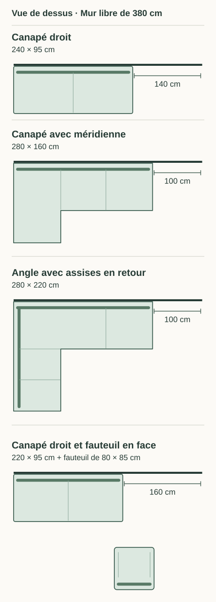

Vous avez mesuré 3,80 m entre les deux bouts du mur. L’angle de 2,80 m que vous imaginez y entre largement. Mais si la terrasse est à droite, c’est aussi par là qu’on rentre avec les coussins du jardin, qu’on sort avec les assiettes et qu’on passe quand quelqu’un fait la sieste. C’est ce bout de mur qu’il vaut la peine de regarder en premier.
Faut-il centrer le canapé ?
Prenez un canapé droit de 240 × 95 cm. Si vous le centrez, il reste 70 cm de chaque côté. En le décalant tout à gauche, vous retrouvez 1,40 m d’un seul tenant à droite. La pièce a les mêmes dimensions, le canapé aussi. Si la baie est à droite, vous pouvez essayer de passer par là avec les assiettes, sans faire le tour de la table basse. Si, chez vous, on entre d’un côté et on sort de l’autre, le canapé centré mérite autant d’être essayé.
Une méridienne ou un angle avec des places en retour ?
Cela dépend de ce que vous comptez faire de cette place. Pour lire les jambes allongées près de la fenêtre, essayez une méridienne. À l’heure de l’apéro, si vous aimez voir le visage de vos invités, des assises qui se prolongent sur le côté donnent une autre façon de s’installer.
Sur notre croquis, les deux canapés mesurent 2,80 m le long du mur. La méridienne avance de 1,60 m dans la pièce. L’angle avec des assises en retour avance de 2,20 m. Les 60 cm de différence se voient à peine quand on regarde le mur de face. On les retrouve tout de suite quand on recule la chaise de la salle à manger. Faites l’essai avec la chaise tirée et la porte-fenêtre grande ouverte. Pour marquer votre choix sur le plan, « retour côté jardin » est plus parlant que « angle à gauche ».
Et si vous gardiez votre fauteuil ?
Un canapé droit de 220 × 95 cm et un fauteuil indépendant peuvent donner un salon très agréable pour discuter. Le soir, le fauteuil reste près de la lampe. Quand des amis viennent, il pivote vers le canapé. Si vous avez déjà un fauteuil que vous aimez, commencez avec celui-là. Placez-le en face, de biais, puis asseyez-vous. Voyez-vous votre invité sans devoir vous tourner ? Peut-il se lever sans déplacer la table basse ?

À tracer chez vous.
Ces dimensions sont des exemples à tracer chez vous. Un mètre de mur libre à côté du canapé peut déboucher sur un passage beaucoup plus étroit devant une chaise. Deux bandes de ruban au sol, l’une pour le canapé et l’autre pour le bout du retour, suffisent pour repérer cet endroit. Pour un relax, demandez la profondeur totale en position ouverte et l’espace nécessaire derrière le dossier. Avant de commander, vérifiez aussi le trajet du plus grand élément, surtout si l’escalier tourne sur un palier.